Productgegevens van de fabrikant · Key Systems, Inc.
Beheer van sleutels en bezittingen op het hoogste beveiligingsniveau
KSI levert verschillende uitvoeringen van de elektronisch gestuurde SAM, om uw sleutels en bezittingen op te bergen, te controleren en te beheren. U kunt deze apparaten naar wens inrichten om uiteenlopende bezittingen te beveiligen. Toegangsprofielen worden aan één of meer gebruikers toegekend met de software Global Facilities Management System (GFMS).
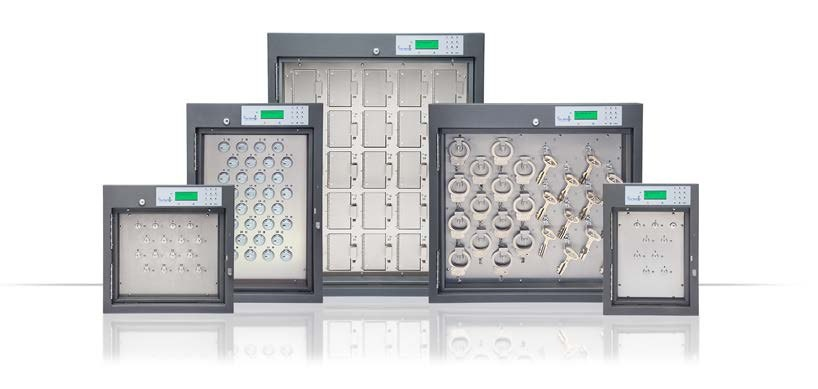
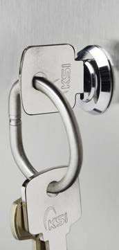
Meerdere sleutels op één sleutelpositie vastzetten. Onze sleutelringen zijn genummerd en gemaakt van duurzaam roestvast staal.
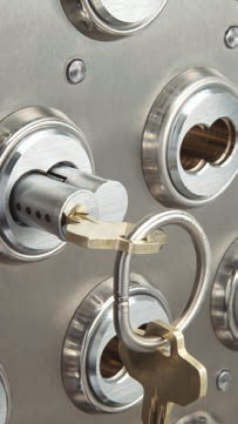
Tamper-Proof Key Rings® zijn ook te gebruiken met onze niet-elektronische producten.
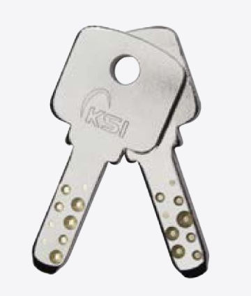
Behuizingen voor wisselbare cilinders zijn leverbaar voor Small Format, Large Format en Mogul-sluitingen. Wij bieden directe opsluiting in vaste sleutelposities.
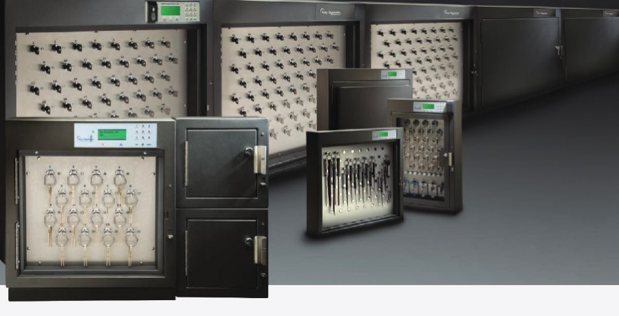
Toegangsprofielen worden aan één of meer gebruikers toegekend met de software Global Facilities Management System (GFMS). Daarmee beheert u alle kasten en locaties in één omgeving.
Security Asset Manager™ · Opties
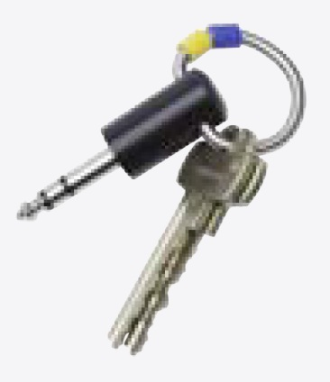
De fobs bevatten een unieke elektronische identiteit die in de SAM continu wordt bewaakt. Ze kunnen van kast naar kast en van positie naar positie worden verplaatst en blijven daarbij te volgen. SmartFobs bevatten geen batterijen die onderhoud vragen en zijn leverbaar vergrendeld op hun plek of onvergrendeld. Ze zijn ontworpen om waterbestendig te zijn.
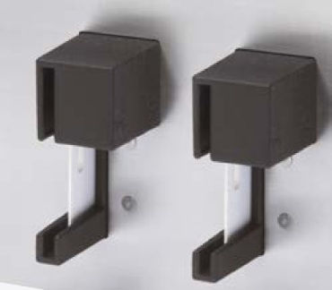
Metalen hulzen die vast op het paneel zijn gemonteerd, verbergen en beschermen passen. Sluitsleutels voorkomen dat ze worden weggenomen.
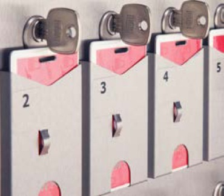
Vergrendelt en verbergt harde en halfharde passen direct, zonder extra sleutels of hulzen.
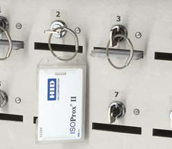
Passen zitten in uitneembare harde kunststof hulzen en worden in de holtes van de SAM verborgen, voor extra beveiliging. De pashouders zitten vast aan de sleutels die ze op hun plek vergrendelen.
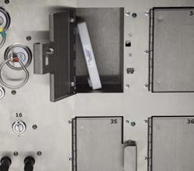
Afsluitbare compartimenten in verschillende maten om bezittingen te beveiligen. Opladen en registratie van identiteit zijn mogelijk.
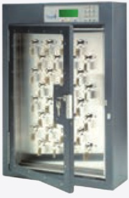
Doorzichtige Lexan™-deuren maken een snelle visuele controle van de bezittingen mogelijk. Expansion deuren vergroten de capaciteit voor grote bezittingen.
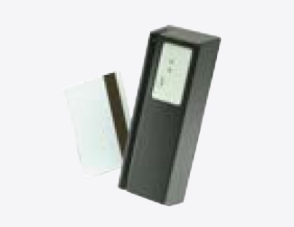
Een toegangspunt met meerdere functies voor GFMS en de SAM. Te gebruiken voor autorisaties op afstand en om te bevestigen dat bezittingen zijn teruggebracht voordat iemand naar buiten gaat.
Security Asset Manager™ · Opties en identificatie
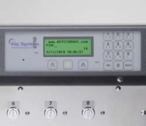
Onze eigen KSI cam-sloten zijn leverbaar om de sleutelposities te vullen. Vasthouden met de meeste andere slottypen, waaronder small format en large format wisselbare cilinders, is eveneens mogelijk.
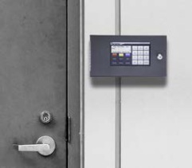
De camera levert een scherp beeld van 5 MP van de gebruikers bij het apparaat. De camera brengt op korte afstand een groot gebied in beeld.
Elke Security Asset Manager is te bedienen met de identificatiemethode die bij uw organisatie past. Drie daarvan werken zonder aanraken.
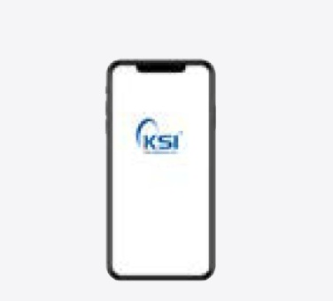
Zonder aanraken
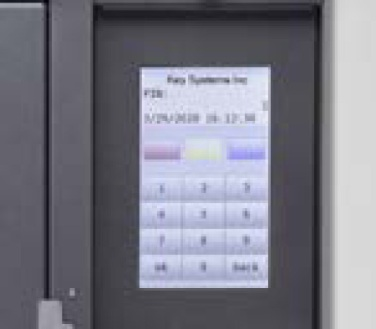
Bediening op het scherm van de kast.
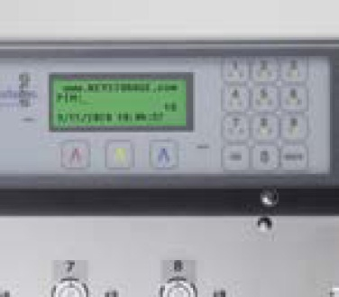
Massief oppervlak zonder bewegende delen, of voelbare toetsen.
Zonder aanraken
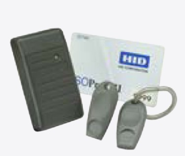
Zonder aanraken
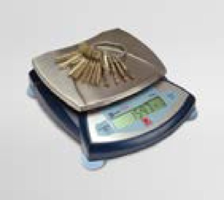
Weegcontrole van teruggebrachte sleutelbossen.
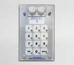
Toegang op het hoogste beveiligingsniveau.
Vingerafdruk, gecombineerd met een pincode.
Security Asset Manager™ · Uitvoeringen
Stalen behuizing, NEMA 3S. Eén kast loopt van 8 tot 96 posities; twee kasten naast elkaar samen tot 192, met één bedieningspaneel.
| Uitvoering | SAM 8 | SAM 16 | SAM 32 | SAM 64 | SAM 96 |
|---|---|---|---|---|---|
| Posities | 8 | 16 | 32 | 64 | 96 |
| Breedte | 33 cm | 46 cm | 46 cm | 71 cm | 71 cm |
| Hoogte | 46 cm | 46 cm | 69 cm | 69 cm | 91 cm |
| Diepte | 15 cm | 15 cm | 15 cm | 15 cm | 15 cm |
| Gewicht, ca. | 9 kg | 9 kg | 20 kg | 29 kg | 54 kg |
| SRP-haken | – | 94 | 166 | 306 | 482 |
| KSI SmartFob | – | 40 | 72 | 144 | 208 |
| Multi-Chit | – | 10 | 20 | 32 | 48 |
| Elektronische lockers | – | • | • | • | • |
| Multi-compartiment | – | • | • | • | • |
Afmetingen omgerekend uit inches (13–28⅛" breed, 18–36" hoog, 6" diep). Multi-compartiment op aanvraag. Maatvoering onder voorbehoud.